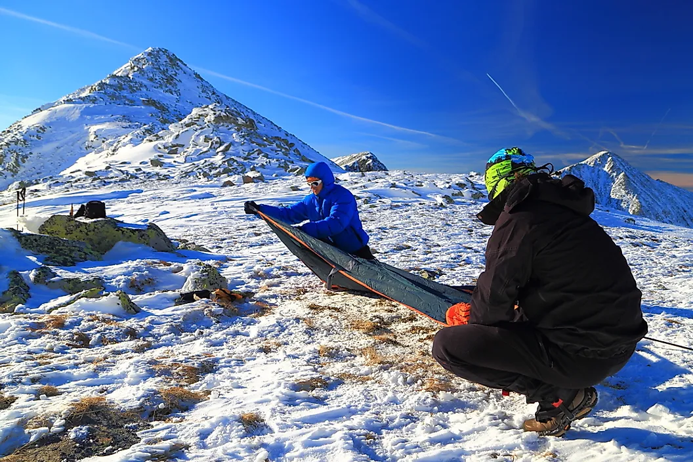
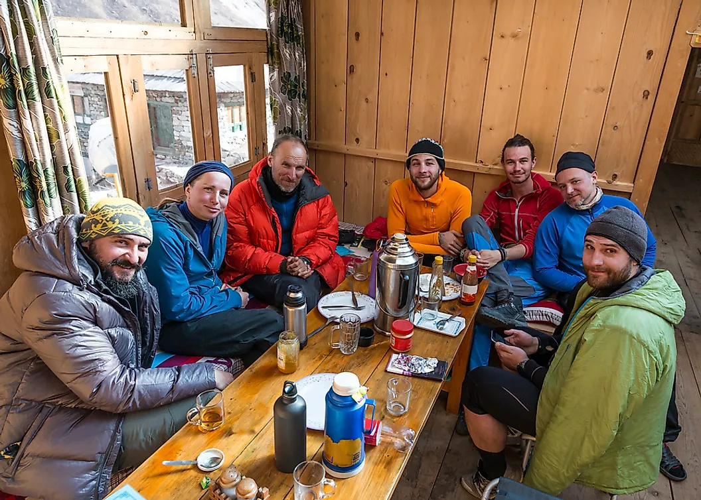
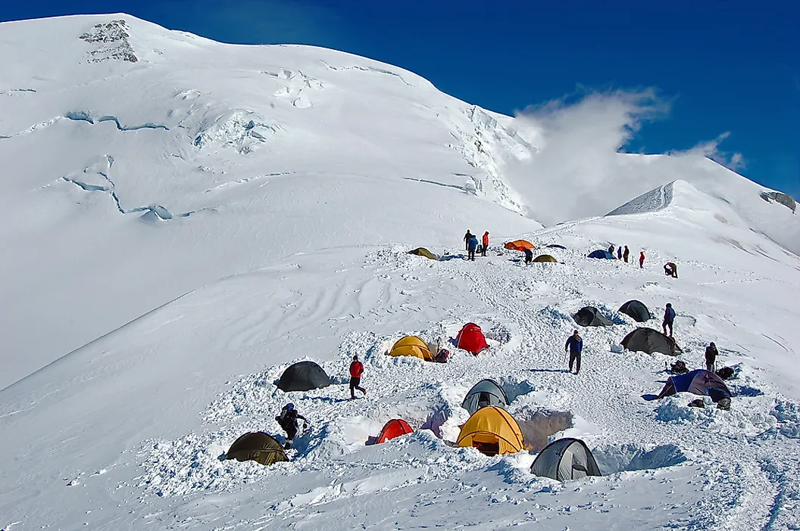
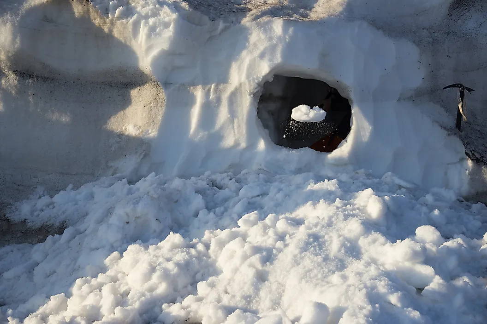

Base Camp
Base camps are most frequently used by mountain climbers who are trying to reach the summit of very high mountains. These shelters are often stocked with necessary supplies and provide climbers with a safe location for acclimatizing to extreme altitudes. When climbs to the summit take multiple days, several base camps may be located along the trails. Some of the most well-known base camps are located on Mount Everest.

Hut
Huts may be well-developed or rustic shelters, located in rural areas at differing elevations along a mountain. These shelters are designed around a shared dining area with private sleeping sleeping quarters. These sleeping rooms are stocked with a bed, pillows, and blankets. Climbers bring a sleeping bag. Like base camp, huts allow a trail to be divided into several days worth of hikes and make it possible for climbers to travel with a reduced pack. During warmer seasons, many huts have full-time staff or volunteers that manage the daily activities necessary to keep the shelter running. In some locations, climbers have the option to purchase snacks, meals, and drinks.

Tent
Tents consist of a pole framework, covered in a tarp or some other material and held by ropes and anchors. These shelters are set up at the moment it will be used and are easily portable. Simpler designs require just a thin tarp, while more durable designs incorporate heavier materials that can hold up against dangerous weather conditions. In extreme weather, tents may be set up behind mounds of snow or rock, which act as windbreaks and help protect the shelter. Tents are the most frequently used type of shelter.

Snow Cave
Snow caves are preferred over tents by some climbers, where weather conditions permit. These shelters are known to be warmer than tents and have only 2 requirements: snow and a snow shovel. Climbers can build a snow cave in a short amount of time, digging out an area under at least 4 feet of snow. The inner temperature is usually around 32° fahrenheit and for added warmth, climbers use waterproof, lightweight bivvy bags and foam sleeping pads. Another type of snow cave is an igloo, although this requires a very specific construction technique and should only be attempted by those with experience.

Bivouac
A bivouac, also known as a bivvy, is a very rudimentary type of shelter. It does not offer a completely enclosed shelter and in some cases, may involve simply sleeping in the open. When in the open, climbers use a sleeping bag and cover it with a bivouac sack (or bivvy bag). A bivouac sack is a lightweight, waterproof liner that provides an additional layer of protection against inclement weather and cold temperatures. Climbers may also set up a bivouac between a crack in nearby rocks or a ditch formed in the snow, both of these offer more shelter. This shelter is often chosen because it allows climbers to carry a reduced-weight pack. A bivouac does have the added risk of climbers being more exposed to dangerous weather.